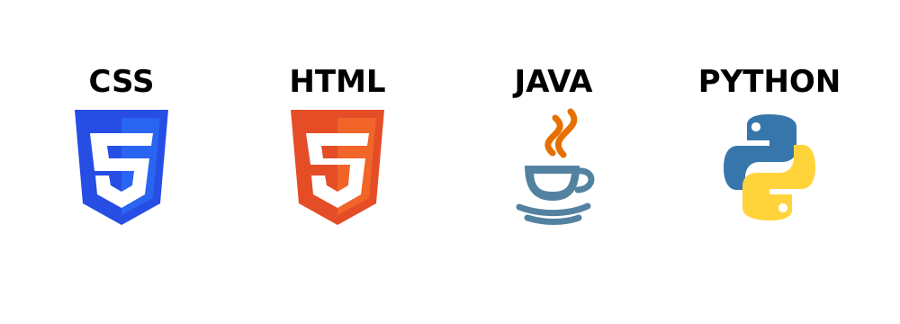

Welcome to my ComS 3190 portfolio!
I am a Computer Science student at Iowa State University with an interest in software development and cybersecurity. I enjoy learning new technologies, solving problems, and creating useful programs with Python, Java, HTML, and CSS.

The first project focuses on designing a Web page using HTML and CSS. In terms of the layout, a navigation bar is created at the top displaying a list of menu items. We include some text describing each section of the page. Additionally, we included two images to enhance the visual appeal of the page.
I created a jigsaw puzzle program using Java. The program allows the user to select any picture, divides it into puzzle pieces, and mixes the pieces. The user must then rearrange the pieces to recreate the original picture and complete the puzzle.
I would be happy to connect about coursework, projects, or opportunities.
shahwaiz@iastate.edu